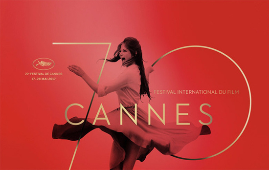

第 70 届戛纳电影节落下帷幕
| 本文作者：Zhang_Yao_Yao | 2017-06-19 20:37 |

北京时间 5 月 29 日凌晨，第 70 届戛纳电影节正式落下帷幕。虽然今年是 70 周年的大庆，也汇聚了一大批的名导新作，但和往年相比，今年的戛纳电影节可以用不温不火来形容，即主竞赛单元总体质量都还尚可，但缺乏过去几年广受赞誉的那种“神作”，给人一种十分平淡的感觉。当然，不管评价如何，颁奖礼都是电影节上最受人瞩目的环节，今年的奖项归属倒是没有太多冷门，最终获奖的基本上都是各家预测的热门。

金棕榈奖：《自由广场》
《自由广场》是今年主竞赛单元口碑最好的影片之一，也是中国媒体评分表中得分最高的影片。它讲述了一位博物馆馆长收藏风格奇特的艺术品的故事，设定荒诞不经。当然，导演鲁本·奥斯特伦德还奉献了颁奖礼上最精彩的表演，他获奖后十分激动，在发表获奖感言的过程中不停地用各种夸张的动作庆祝，抢戏无数。在戛纳这个殿堂级的舞台上能够如此挥洒，也可以看出奥斯特伦德的真性情。


评委会大奖：《每分钟 120 击》
如果说一定要评出本届戛纳电影节最惊喜的电影，罗宾·坎皮略导演的《每分钟 120 击》绝对是不二之选。这部电影讲述了两个年轻男同性恋在上世纪 90 年代投身到抗击艾滋病事业中，对抗冷漠寻求平权的故事。这部电影获得了本届戛纳电影节评委会主席佩德罗·阿莫多瓦的青睐，在颁奖礼后的发布会上，他甚至因《每分钟 120 击》没能获得金棕榈而潸然泪下。能够得到大师这样的支持，这部电影恐怕已经成为了很多人的年度期待。

最佳导演奖：索菲亚·科波拉《牡丹花下》
在今年各大奖项总体没有冷门的情况下，索菲亚·科波拉获得最佳导演奖还是让很多人感到意外。因为《牡丹花下》在主竞赛单元的影片中口碑属于中下游，评价普遍认为远不如 1971 年的原作，唯一的亮点就是摄影，结果科波拉最终获得了最佳导演奖。当然，从评委中的范冰冰和杰西卡·查斯坦的表态来看，对女性电影人身份的肯定和对女性力量的关注一定是科波拉的加分项。不管怎么样，结果已经确定，科波拉也成为了 1961 年的尤莉亚·索恩采娃后戛纳史上第二位获得最佳导演奖的女性导演，的确是一项了不起的成就。

最佳男女主角：杰昆·菲尼克斯和黛安·克鲁格
杰昆·菲尼克斯和黛安·克鲁格分别凭借《你从未在此》和《凭空而来》获得影帝影后，这两个奖项在红毯嘉宾名单出炉后就已经不是秘密了，两个人各自的表现也都完全配得上影帝影后的殊荣。杰昆·菲尼克斯在 2012 年凭借《大师》获得威尼斯电影节影帝后，又一次获得三大电影节的影帝。不过颁奖礼当晚，最抢镜的还是他和女友鲁尼·玛拉撒狗粮，和他脚上的一双匡威帆布鞋。


70 周年特别奖
正值戛纳电影节 70 周年之际，组委会专门设立了 70 周年特别奖，这个奖项颁给了妮可·基德曼，所以我们可以把这个奖理解为最佳劳模奖了。因为今年的电影节上，妮可·基德曼一个人就有《牡丹花下》、《圣鹿之死》、《谜湖之颠第二季：中国女孩》、《派对上如何搭讪女孩》四部作品亮相，难怪有人戏称今年的戛纳电影节应该叫做妮可·基德曼电影节。今年也绝对称得上是妮可·基德曼大放异彩的一年，能够获得这个 70 周年特别奖，也是对她的一种肯定。

短片金棕榈
虽然今年主竞赛单元没有中国电影的身影，但短片金棕榈奖却给了我们惊喜。中国导演邱阳的作品《小城二月》获得了短片金棕榈，这是 1993 年陈凯歌凭借《霸王别姬》获得金棕榈奖后，中国导演第二次获得金棕榈奖。虽然是短片，但至少在一届中国影片几乎全无存在感的戛纳电影节上，为中国电影争得了荣誉。作为影迷，只希望中国电影能够有更多的机会在国际舞台上大放异彩吧。

今年的戛纳电影节，由于影片整体缺乏亮点，被不少人批评与艺术渐行渐远，倒是越来越商业化、社交化，这从红毯的种种乱象就能看出端倪。虽然戛纳电影节的影片依然会是全世界影迷的年度期待，但戛纳也该思考艺术电影殿堂的这条路如何继续走下去，毕竟过分商业化的戛纳是谁都不愿意看到的结果。
2017 年戛纳电影节完全获奖名单
金棕榈奖：《自由广场》鲁本·奥斯特伦德
评委会大奖：《每分钟 120 击》罗宾·坎皮略
最佳导演：索菲亚·科波拉《牡丹花下》
最佳男主角：杰昆·菲尼克斯《你从未在此》
最佳女主角：戴安·克鲁格《凭空而来》评审团奖：《无爱可诉》安德烈·萨金塞夫
最佳剧本：《圣鹿之死》欧格斯·兰斯莫斯、《你从未在此》琳恩·拉姆塞（并列）
处女作金摄影机奖：《年轻女子》 莱昂诺·瑟莱利
短片金棕榈：《小城二月》邱阳
短片评审团奖：《天花板》Teppo Airaksinen戛纳电影节 70 周年特别奖：妮可·基德曼